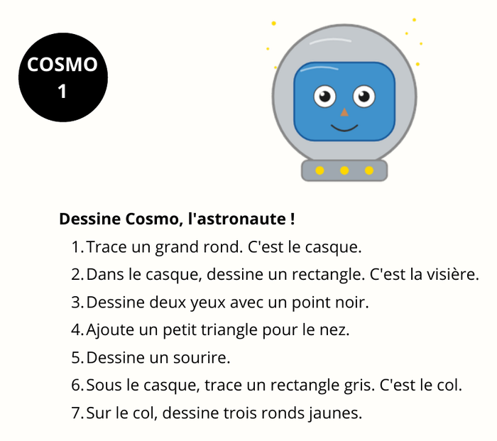

Robot dessine 2
Module 1 · 7–10 ans (4–6P) · 25 min · 5 étapes · fiche à imprimer
Par deux : l’élève programmeur lit les instructions pour dessiner Cosmo, l’élève robot dessine sans voir le modèle. On compare avec le modèle : les dessins sont différents. La classe trouve l’instruction floue, celle qui laisse le choix, la réécrit, puis refait le dessin pour vérifier.
L’idée à retenir : Une machine classique exécute exactement les instructions, sans rien interpréter. Une instruction claire n’a qu’un seul sens. Si le résultat est faux, l’erreur est dans les instructions.

Anne, enseignante, te guide étape par étape : les idées des élèves, la trace écrite, ce que l’activité simplifie.
Carte programme Cosmo (PDF)Guide pour l’enseignant·e (PDF)
Objectifs
- Vivre la notion de programme en jouant le robot qui exécute les instructions d’un programmeur.
- Comprendre qu’une instruction floue laisse le choix et donne des dessins différents : il faut des instructions claires et élémentaires.
- Comprendre qu’une machine suit un programme écrit par des humains : si le résultat est faux, l’erreur est dans les instructions.
Notions
algorithme · programme · instruction claire · instruction floue · déboguer
EN 12 réflexion sur la place de l’informatique dans la classe et au quotidien · EN 12 réalisation d’activités en lien avec la vie courante comprenant une suite d’instructions pour découvrir la notion d’algorithme · EN 22 identification des composants principaux de différents types de machines et de leurs fonctions
La séance · 5 étapes · 25 min
Discussion · 5 min, en classe (peut se raccourcir) — Trois questions, dans l’ordre : les machines que la classe connaît, puis « Une machine peut-elle dessiner ? Comment saurait-elle quoi dessiner ?nbsp;», puis la question qui mène au jeu.
« Si vous étiez un robot qui dessine, de quoi auriez-vous besoin pour faire exactement le dessin demandé ?nbsp;»
Le déroulement en détail
- « Quelles machines connaissez-vous ? Que font-elles ?nbsp;» Ce qui peut venir : chaque machine fait une tâche précise ; des humains l’ont fabriquée pour cela.
- « Une machine peut-elle dessiner ? Comment saurait-elle quoi dessiner ?nbsp;» Ce qui peut venir : oui, si on lui donne des instructions écrites par des humains ; elle n’invente pas le dessin.
- La dernière question mène au jeu : il faudrait des instructions, lues une à une, assez précises pour ne rien avoir à deviner. Annonce : « Aujourd’hui, l’un de vous va jouer le robot. »
Ce qui doit ressortir : Une machine suit un programme écrit par des humains.
Simulation · 5 min, par deux — Le programmeur lit les instructions une à une, sans montrer le modèle ; le robot dessine Cosmo sans le voir.
« Le robot fait exactement ce que dit le programmeur, ni plus ni moins. »
Le déroulement en détail
- Forme les paires : un programmeur, un robot. Le programmeur reçoit la carte programme de Cosmo, le robot une feuille blanche et des crayons.
- Le programmeur lit les 7 instructions une à une, sans montrer le modèle et sans gestes. Le robot dessine seulement ce qu’il entend, une instruction après l’autre.
- Le modèle reste caché : les paires ne comparent pas encore.
Ce qui doit ressortir : Chaque robot a un dessin de Cosmo, fait seulement avec les instructions.
Comparaison · 5 min, en classe — Affiche quelques dessins à côté du modèle. Ils diffèrent : quelle instruction a laissé le choix au robot ?
« Les dessins sont-ils identiques ? Quelle instruction a posé problème ?nbsp;»
Le déroulement en détail
- Montre le modèle de Cosmo, puis affiche trois ou quatre dessins à côté.
- La classe compare, carte programme en main : la taille du casque, la visière, les yeux, le sourire…
- Pour chaque différence : « Quelle instruction le robot a-t-il suivie ? Pouvait-on la comprendre autrement ?nbsp;» Souvent : « Trace un grand rond », « Dessine deux yeux avec un point noir », « Dessine un sourire ».
- Choisis avec la classe une instruction à réécrire.
Ce qui doit ressortir : Les robots ont suivi le programme : ce sont des instructions floues qui leur ont laissé le choix. Un élève-robot interprète, comme un humain ; une machine, non.
Débogage · 5 min, en classe — La classe réécrit l’instruction floue pour qu’elle n’ait qu’un seul sens, puis la teste avec un autre robot.
« Comment l’écrire pour que le robot n’ait plus le choix ?nbsp;»
Le déroulement en détail
- Écris l’instruction floue au tableau. La classe la réécrit pour qu’elle n’ait qu’un seul sens : une taille, une place, une couleur, un nombre. Par exemple : « Trace un rond de 15 cm de large, au centre de la feuille. »
- Écarte les réécritures qui laissent encore le choix, comme « Trace un très beau rond ».
- Fais prédire : « Le robot aura-t-il encore le choix ?nbsp;» Puis un autre élève-robot, qui n’a pas vu le modèle, suit le programme corrigé.
- Compare avec le modèle. S’il reste du temps, réécris les autres instructions floues de la même façon.
Ce qui doit ressortir : Si le résultat est faux, l’erreur est dans les instructions : on la réécrit, on teste encore. C’est déboguer.
Faire le point · 5 min, en classe — La trace écrite, en trois lignes : algorithme, instruction claire, déboguer.
Le déroulement en détail
- Pour chaque ligne : pose la question, écoute les réponses, puis écris la ligne au tableau. Les élèves la copient.
- « Qu’avez-vous suivi pour dessiner Cosmo ?nbsp;» → Un algorithme, c’est une suite d’instructions, dans l’ordre, pour faire une tâche. Écrit pour une machine, c’est un programme.
- « Quelle instruction avons-nous réécrite ? Pourquoi ?nbsp;» → Une instruction claire n’a qu’un seul sens : elle ne laisse pas le choix.
- « Si les dessins sont différents, la machine s’est-elle trompée ?nbsp;» → Une machine n’interprète pas : elle exécute exactement les instructions. Si le résultat est faux, l’erreur est dans les instructions : on la réécrit, on teste encore. C’est déboguer.
Avant la séance
Une carte programme par paire (par exemple Cosmo, l’astronaute) · une feuille blanche et des crayons de couleur par paire. Garde le modèle caché jusqu’à l’étape 3.
Pour bien comprendre
Quand les dessins diffèrent, la machine ne s’est pas trompée : les élèves-robots ont interprété des instructions floues, comme des humains.
Une machine n’interprète pas : chaque instruction n’a qu’un seul sens pour elle. Une instruction valide mais mal choisie est exécutée quand même, et le résultat est faux.
C’est pourquoi les langages de programmation ont des règles strictes. Si le résultat est faux, l’erreur est dans les instructions : on débogue.
Conseils
- Si un élève dit « Mon robot aspirateur sait où aller, il est intelligent », demande : « Qui lui a dit quoi faire ?nbsp;»
- Le robot ne voit pas le modèle, et le programmeur ne montre rien avec les mains : seules les instructions comptent.
- « Dessine deux yeux avec un point noir » peut se comprendre de deux façons (un point dans chaque œil, ou un seul point entre les yeux) : c’est souvent l’instruction à réécrire.
Évaluer
- Expliquer ce qu’est une instruction et ce qu’est un programme pour une machine.
- Dire pourquoi une instruction floue donne des dessins différents, et la réécrire pour qu’elle n’ait qu’un seul sens.
- Dire que, si le résultat est faux, l’erreur est dans les instructions (déboguer).
Dans le module
Robot dessine 1 · instruction fausseRobot dessine 2Robot apprend à dessiner · exemples